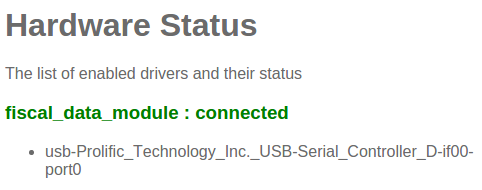

介绍
The Belgian government requires certain businesses to use a government-certified device called a Fiscal Data Module (also known as a blackbox). This device works together with the POS application and logs certain transactions. On top of that, the used POS application must also be certified by the government and must adhere to strict standards specified by them. YuanCloud 9 is a certified application. More information concerning the Fiscal Data Module can be found on the official website.
As of December 2015, due to Belgian government restriction, the certification is only valid for YuanCloud Online instances.
Required hardware
A government certified Fiscal Data Module per POS, all of them should work, but the Cleancash SC-B is recommended, you will also need:
- A POSBox per POS
Setup
POSBox
In order to setup the blackbox, you will first have to ensure that the POSBoxes you're using have a recent image on them (support for the FDM was added to the POSBox image on the 10th of December 2015). See Point of Sale Hardware Setup on how to upgrade the POSBox. You can verify that the Fiscal Data Module is recognized by the POSBox by going to the Hardware status page via the POSBox homepage.
YuanCloud
An YuanCloud POS is turned into a certified POS by installing the Belgian
Registered Cash Register app (technical name:
pos_blackbox_be). Because of government restrictions imposed on
us, this installation cannot be undone. After this, you will have to
ensure that each POS configuration has a unique POSBox associated with
it (
and ensure Hardware Proxy / POSBox is set). The first time you open
the Point of Sale and attempt to do a transaction, you will be asked
to input the PIN that you received with your VAT signing card.

Restrictions
As mentioned before, in order to get certified the POS application must adhere to strict government guidelines. Because of this, a certified YuanCloud POS has some limitations not present in the non-certified YuanCloud POS.
- Refunding is disabled
- Modifying orderline prices
- Creating/modifying/deleting POS orders
- Selling products without a valid tax
- Multiple YuanCloud POS configurations per POSBox are not allowed
- Using the POS without a connection to the POSBox (and thus FDM)
- Blacklisted modules: pos_discount, pos_reprint, pos_loyalty